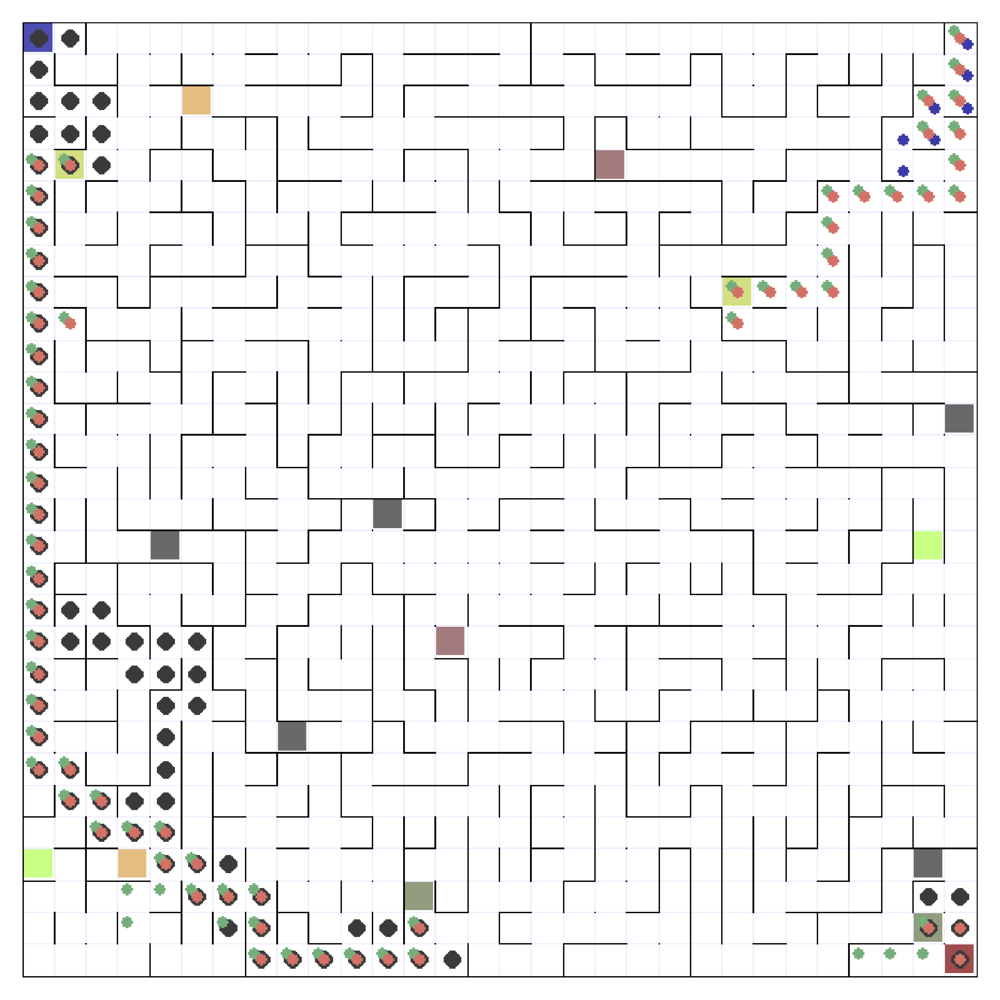
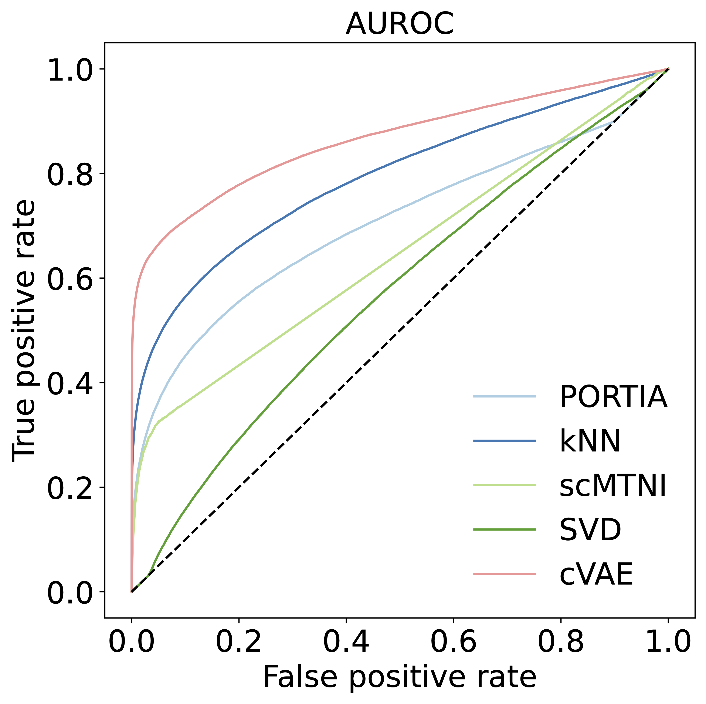
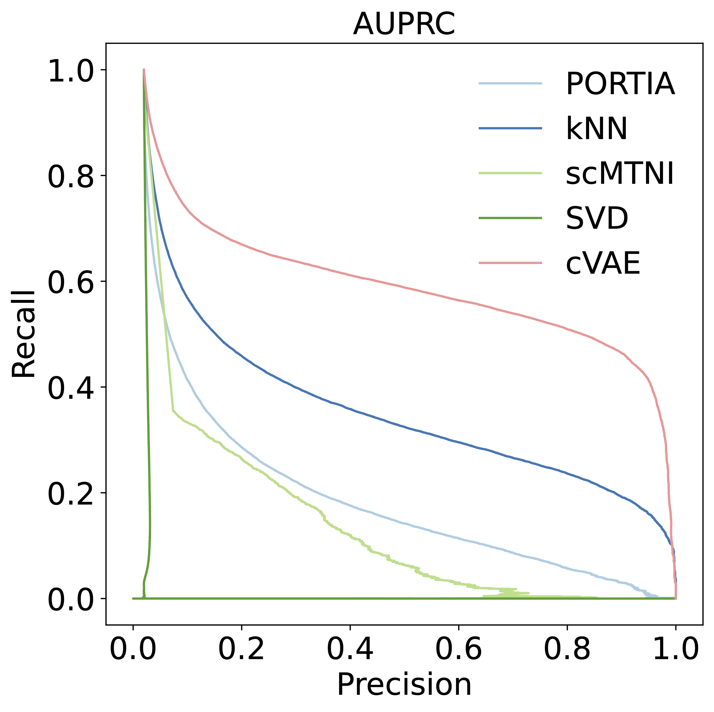

Yueheng Zhang
About Me
I am currently a Machine Learning Associate at Vector Institue. Before that, I was a research intern at Vector Institue, supervised by Prof. Pascal Poupart. I received my Master’s degree from University of Waterloo, where I ventured into machine learning research. Before that, I graduated from the University of Chicago, majoring in computer science and mathematics.
Publications
-
Master's Thesis, University of Waterloo.
-
Current Projects
-
Gaussian processes (GPs) are a versatile technique for quantifying uncertainty about unknown functions, and they have long been applied to reinforcement learning (RL) problems. Most existing RL algorithms with GPs treat the value function as a generic unknown function to approximate using GPs with generic kernels. We observe that under certain modelings, the value function has a natural custom kernel. We conjecture that using this kernel for value estimation is more accurate and data-efficient. Preliminary results for offline RL in maze environments show that our method has significantly better performance than baselines. We are currently exploring solving mazes in the online setting.
Discrete-state Bayesian RL with graph Gaussian processes
A visualization of the maze environment for offline RL. The black dots are cells visited by five given trajectories starting from the upper-left corner, the blue dots are cells visited by a variant of CQL, the green dots are cells visited by a GP model using the Matérn kernel, and the red dots are cells visited by our model. Starting from the upper-right corner, our model successfully reaches the goal state (lower-right corner) in 80 steps with a reward of 0.99 (for reference, the average length of the five given trajectories starting from the upper-left corner is 63 steps, and the average reward is 0.99), whereas both CQL and the method with Matérn kernel failed to reach the goal state starting from the upper-right corner. -
Gene regulatory networks (GRNs) describe how gene expressions are regulated, the study of which is crucial to understanding a wide range of biological processes. GRNs can be reconstructed from transcriptomics and chromatin accessibility data via mathematical modelings or machine learning models. Most existing methods reconstruct GRNs at a single time point. However, for time-series data (e.g. in developmental biology) it is important to take into account the temporal correlation between time points. We are applying generative deep learning models, in particular conditional variational autoencoder and transformer architecture, to produce holistically denoised GRNs for time series data. Preliminary results show that generative models strongly outperform the best baseline.
Denoising time-series gene regulatory networks
ROC and PRC for denoising of 10 timepoints of an evolving synthetic GRN with 250 transcription factors and 1000 genes, featuring our method (cVAE) and the baselines.